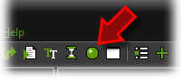
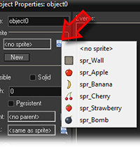

Tutorial
Page 3 of 15
Creating Objects
Sprites are just images. They don't do anything. But objects in your game must
perform actions. They must move around, react to mouse clicks, etc. So the next
step is create some objects. We will start with the wall object.
To add an object click on the Resources menu and press Create Object
or click on the button with the green ball.

The form that appears might look a bit
complicated but don't worry. It will soon become clear.
We first give the object an appropriate name obj_wall. Next,
to give it the appropriate sprite, click on the menu icon to the right of <no sprite>
and from the menu that appears select the wall sprite:

The wall object must be solid cause we do not want the fruit to move through it. To this end,
press the checkbox Solid to select it. As the wall needs no further behavior, press the OK
button to close the form. The wall object should now have appeared in the list at the left. Better
save your work before continuing.